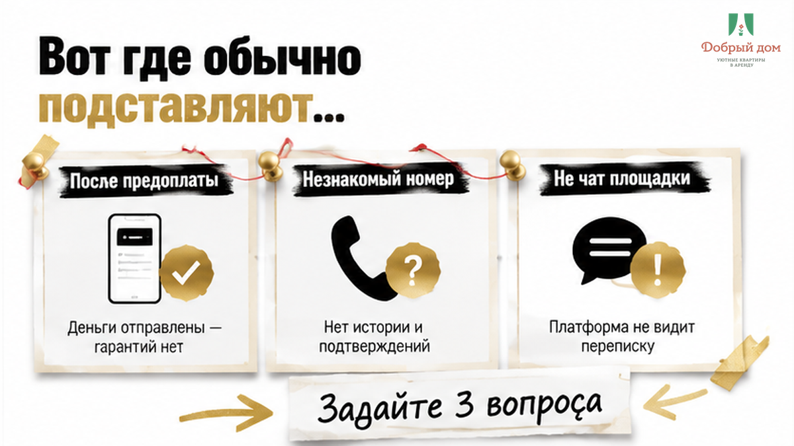
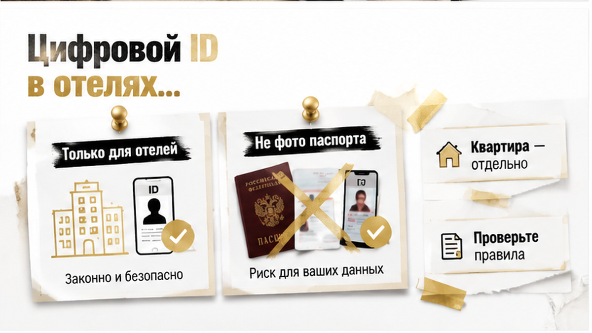
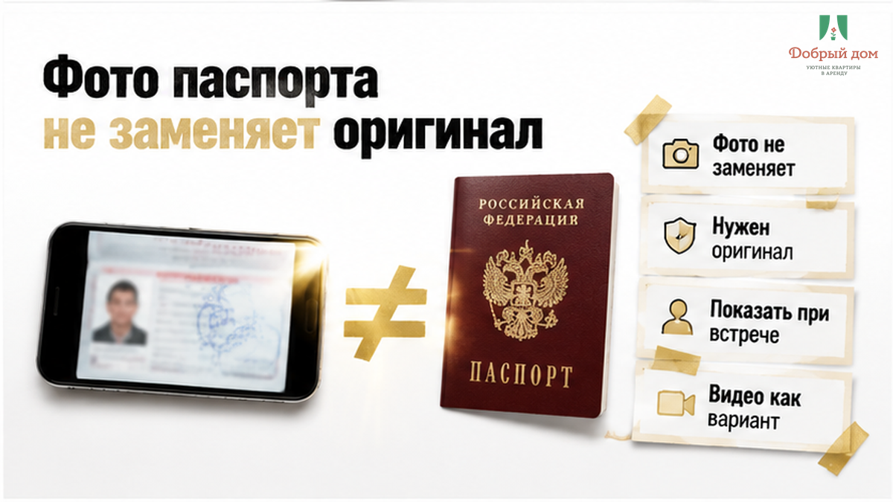
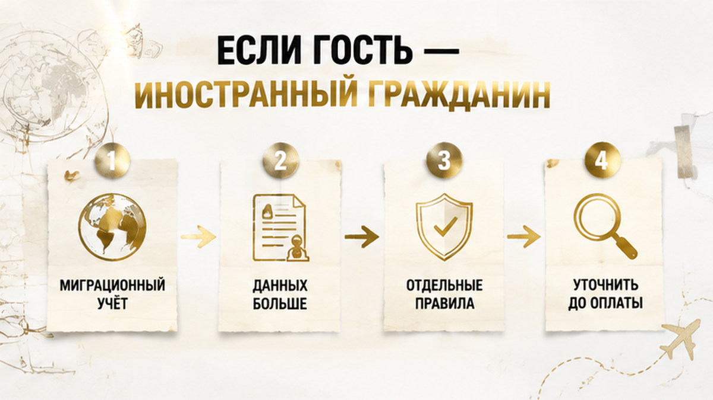
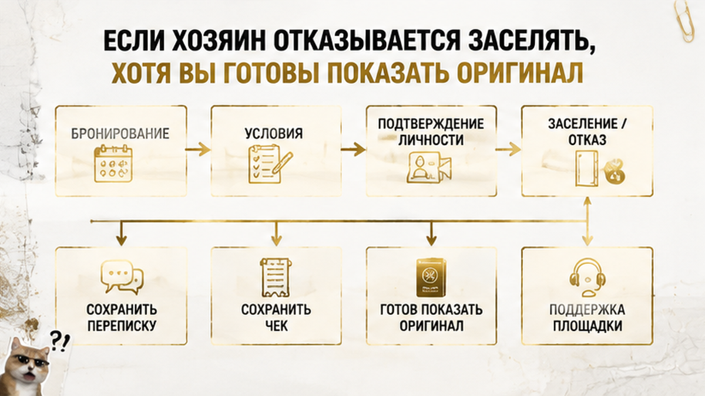
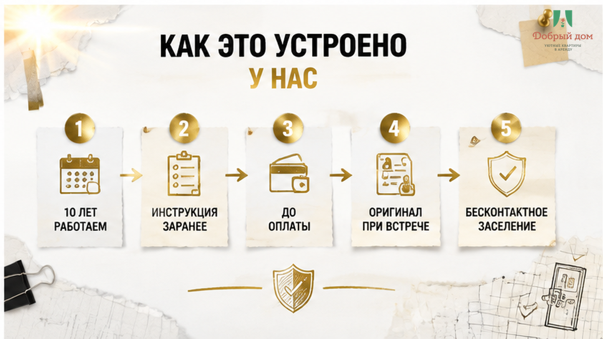

Конец августа. Вы едете в Тюмень по работе или везёте семью перед школой. Квартира найдена, предоплата ушла — и тут сообщение с незнакомого номера:
«Скиньте фото паспорта. Разворот с фотографией и страницу с пропиской».
Аватарки нет. Имя не совпадает с тем, что было в объявлении. Деньги уже переведены. Отказаться страшно. Отправлять фото — тоже.
Что делать прямо сейчас: не высылайте паспорт первым сообщением.
Ответьте текстом и задайте три вопроса:
Попросите ответить письменно, в том же чате. И сразу сохраните переписку с момента брони: условия, чек об оплате, имя получателя денег.
Если вам отвечают спокойно и по делу, возможно, перед вами обычный хозяин, которому нужно оформить проживание. Но если начинают давить: «срочно, иначе снимаю бронь», — это уже другой разговор.

Само желание понять, кто будет жить в квартире, нормально. Хозяин пускает к себе незнакомого человека, оставляет в квартире вещи и технику. Ему важно знать гостя.
Проблема чаще начинается в двух других местах.
Первое — момент. О документах вспоминают не при бронировании, а после перевода денег. И у гостя резко становится меньше выбора: откажешься — можешь остаться без жилья и без предоплаты перед самой поездкой.
Нормальный разговор о документах происходит до оплаты, а не после неё.
Второе — канал. Фото просят отправить в личный мессенджер на незнакомый номер. Не в чат площадки, где переписка сохраняется и её при необходимости видит поддержка, а в приватную переписку. Такое сообщение можно удалить, переслать или сохранить на чужом телефоне.
Роскачество рекомендует не пересылать фото паспорта в открытые чаты и незнакомым получателям. Здесь как раз тот случай.
Так что страх у вас правильный. Просто пугать должен не сам факт показа паспорта, а передача копии неизвестно кому и неизвестно куда — уже после оплаты.

Летом 2026 года много писали о том, что в гостиницу можно заселиться без бумажного паспорта: по цифровому удостоверению, водительским правам или через государственные сервисы.
Из этого легко сделать вывод: «Значит, документы теперь показывают везде, ничего страшного».
Но вывод неверный.
Такие правила относятся к классифицированным гостиницам. Частная квартира, которую вы снимаете посуточно у человека или небольшой службы, живёт в другом режиме. Правила отелей автоматически на неё не переносятся.
Цифровой ID в предусмотренном государством канале и фотография паспорта в личном мессенджере — разные вещи.
В первом случае данные проходят через защищённую систему. Во втором картинка с вашими данными просто оказывается в чужом телефоне. На вид похоже: вы «показали документ». По рискам — совсем не одно и то же.

Фото, скан или PDF — это не сам документ. При личной идентификации они не заменяют оригинал: человека нужно увидеть и сверить с паспортом вживую.
Юристы на консультационных площадках, например Правовед.RU, отвечают так: человек не обязан разрешать фотографировать или сканировать свой паспорт. При встрече можно предъявить оригинал, разрешить переписать нужные данные или самому заполнить анкету.
Это мнения юристов по конкретным ситуациям, а не текст закона и не сложившаяся практика. Но в разговоре с хозяином такой аргумент может пригодиться.
Если вы всё-таки передаёте данные, принимающая сторона начинает их обрабатывать. На неё распространяются обязанности по закону о персональных данных, в том числе по 152-ФЗ.
Для граждан РФ копию паспорта, согласно отраслевым разъяснениям для сферы размещения, запрашивают с согласия гостя. Согласие — не мелкая строчка, которую нужно молча принять. Вы вправе спросить: зачем нужны данные, куда они попадут и сколько будут храниться.
Вместо «фото в личку» можно предложить:
Водяной знак усложнит повторное использование файла, но безопасной передачу полностью не сделает.
И ещё важное: любой вариант лучше согласовать с хозяином до оплаты. Решение «я пришлю только ФИО, а дальше разберёмся у двери» — плохой план.
Этот разговор экономит нервы. Пишите, а не звоните: так останется переписка.
При бесконтактном заселении документы часто просят заранее: у двери вас никто не встретит. Это объяснимо. Но вопросы всё равно задайте — ведь проверить хозяина лично не получится.
Полный список вопросов с готовыми формулировками, которые можно скопировать и отправить хозяину, мы выложили в канале: t.me/Dobriy_dom_72. Там же разбираем переписки гостей: где обычная просьба, а где уже давление.

Здесь ситуация другая, и дело не в прихоти хозяина.
Для иностранного гостя принимающая сторона, в том числе тот, кто сдаёт жильё, должна учитывать требования миграционного учёта и уведомить МВД. Поэтому данных может понадобиться больше: сведения из документа и информация о въезде.
Не смешивайте это с «регистрацией», которую иногда требуют от граждан РФ при обычном посуточном проживании. Это разные вещи.
Конкретный порядок лучше уточнить у принимающей стороны на актуальную дату. Нормы меняются, поэтому пересказывать их по памяти не будем.

Действуйте спокойно.
Роспотребнадзор уместен, когда речь идёт о гостиничной услуге. Автоматически переносить этот порядок на спор с частным лицом по найму квартиры не стоит: работает он там не так, как многие ожидают.
Принцип здесь тот же, что в истории, когда залог не вернули на выезде: помогает не громкое возмущение, а сохранённая переписка.

Мы принимаем гостей десять лет: сначала работали в Сургуте, теперь принимаем и в Тюмени. Формат простой — чистые квартиры комфорт+, без пафоса, «как для своих».
Что можем обещать по этой теме честно:
Про документы скажем без выдумок: точный порядок зависит от конкретной квартиры. Что именно нужно и в каком виде это принимается, спросите у менеджера до предоплаты.
Ответим письменно, чтобы он остался у вас в переписке. Не будем обещать за всех «мы никогда не просим фото» — лучше нормально ответим на ваш конкретный вопрос.
Написать нам можно в MAX: max.ru/id660300569233_biz. Спросите про заселение — пришлём инструкцию заранее, ещё до брони.
Могу ли я отказаться отправлять фото и всё равно заселиться?
Предложите альтернативу: показать оригинал при встрече, выйти на видеосвязь, передать данные через чат площадки или заполнить анкету на месте. Но принять такой вариант или нет, решает хозяин. Поэтому договариваться нужно до оплаты.
Водяной знак действительно защищает?
Он только усложняет повторное использование картинки. Это снижение риска, а не гарантия. Если можно не отправлять фото вовсе, так лучше.
Просят селфи с паспортом. Это нормально?
Такая практика встречается в посуточной аренде и иногда объясняется бесконтактным заселением. Но распространённость не делает канал безопасным. Селфи с паспортом — один из самых чувствительных форматов. Уточните, кому и куда оно уйдёт, и по возможности предложите чат площадки.
Сезон командировок и семейных поездок перед осенью уже начался. К выходным свободных квартир становится меньше.
Посмотреть варианты и забронировать можно здесь: добрыйдом-72.рф/booking/.
Есть вопросы по заселению — звоните, спокойно разберёмся ещё до оплаты: +7 (993) 574-83-22.